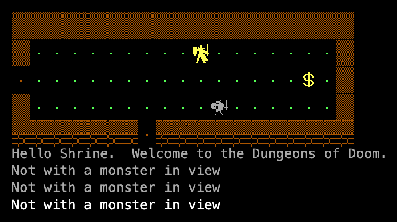
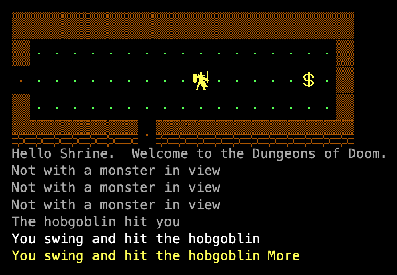
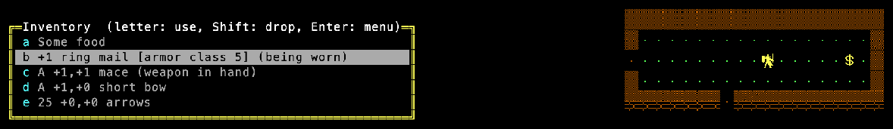

Rogue PC is the IBM PC port of Berkeley Rogue 5.2/5.3, done by A.I. Design (Michael Toy and Jon Lane) and published by Epyx in 1985. It is a sibling of Rogue 5.4, with colours, CP437 line graphics and a title picture. Our build is the modern C port of the 1.48 source. See the family tree.
The title screen, with the original credits and “Rogue’s Name?”.

First steps: “Hello Shrine. Welcome to the Dungeons of Doom.”

A fight: “You swing and hit the hobgoblin.”

Inventory: food, ring mail, a mace, a bow and arrows.
Trivia
Epyx found its own staff playing Rogue and paid for the PC and other home computer versions. (Wikipedia)
The 1.48 source turned up in 2016; it compiled with a 1985 Aztec C compiler, but copy protection made it unplayable until that was patched out. (Virtually Fun)
The function that shows the Epyx title picture is called epyx_yuck(). (source: load.c)
The copy protection read the floppy directly and even set a timer to halt the PC if you stepped through it in a debugger. (source: protect.c)
What's unique
Colour and CP437 graphics instead of plain letters: walls drawn with line characters, a smiley for the hero.
Same rules as Berkeley Rogue: 26 levels to the Amulet of Yendor, and back up.
Code dive
Language: C with 8086 assembly (begin.asm, dos.asm, zoom.asm), about 18,300 lines. Source files carry “A.I. Design” version stamps from 1983–85.
Environment: PC-DOS on IBM PC and compatibles, CGA/EGA; its own built-in curses writes to video memory.
This port: the modern C port (over 85% of the code intact) with our SDL2 frontend, tiles and a WebAssembly build. Source: memmaker/roguepc.
Stats
Thing
Count
Notable ones
Classes
1
Monsters
26
One per letter, as in Rogue 5.x.
Potions
14
Scrolls
15
Rings
14
Wands & staffs
14
Weapons
10
Armour
8
Traps
6
Levels
26+
Amulet on level 26.
Manual
The Epyx “Rogue” instruction manual (1985) is not ours to host; read it at The Rogue Archive (HTML).
Getting started
Open the game, type a name at “Rogue’s Name?” and press Enter.
Move with the arrow keys, numpad or hjkl; walk into monsters to fight; x explores.
Enter lists every command; i the inventory. Tiles / Text switch the look.